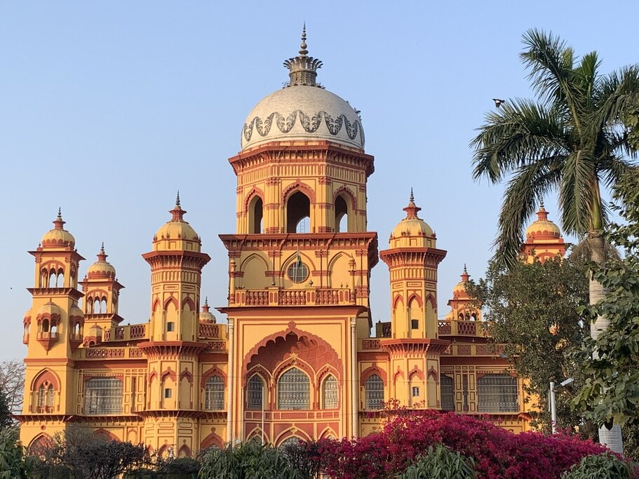
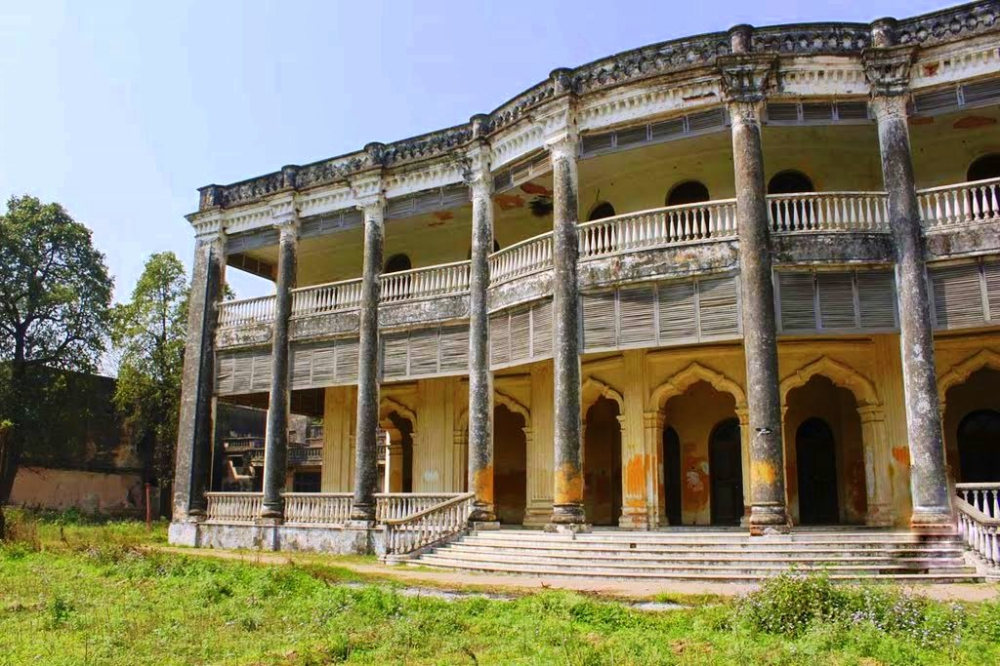
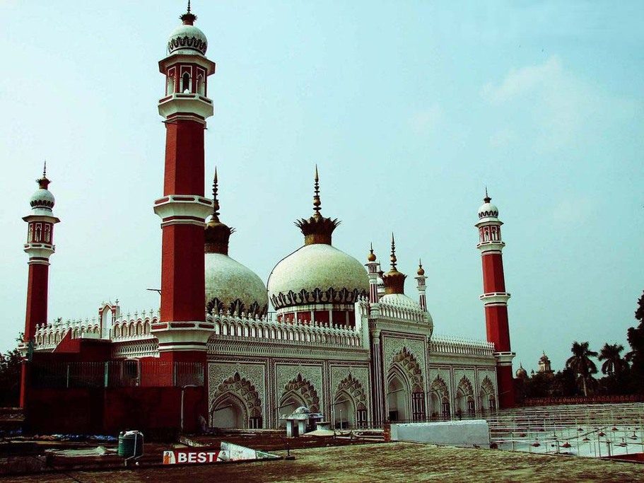
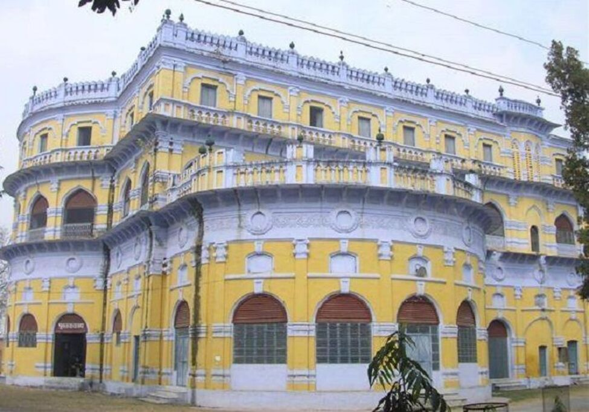
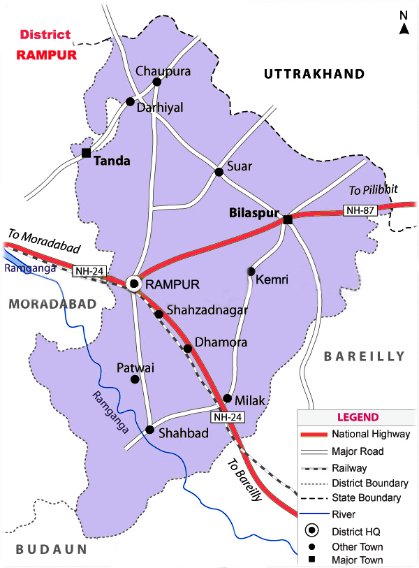

Rampur is a city and a municipality headquarter of Rampur District in the Indian state of Uttar Pradesh. It was formerly known for its various industries, including sugar refining and cotton milling. Its library has more than 12,000 rare manuscripts and a fine collection of Mughal miniature paintings. It is the administrative headquarters of Rampur District. According to the government of India, It is also known as city of nawaabs . It is famous for its rampuri chaaku (knife). Rampur, located between longitude 79°05′ E and latitude 28°48′ N, is in Moradabad Division of Uttar Pradesh, India. It is surrounded by district Udham Singh Nagar in north, Bareillyin east, and Moradabad in west and Badaun in south. Spread in area of 2,367 km2, Rampur is 192-meter above sea level in north and 166.4-meter in south.It is home to farms that cover long stretches of land. During rainy season just after a long period of rain the mountain ranges of Nainital can be seen in the north direction.
